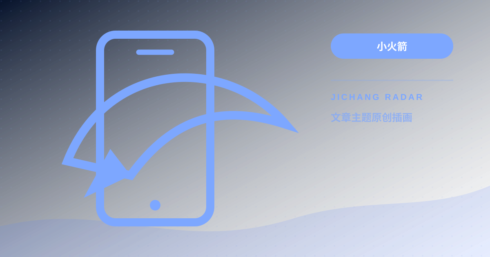
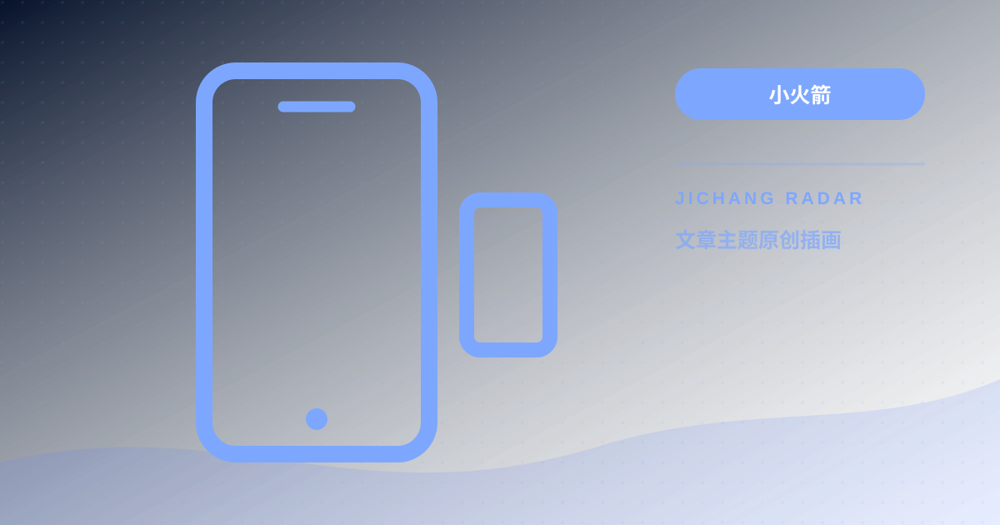

TOPIC / 6
小火箭
经过整理的操作步骤、判断方法与风险提示。
OFFICIAL DOWNLOADS
客户端官方下载
只使用官方商店或项目发布页，避免第三方重打包、植入广告或篡改版本。
安全提示不要下载所谓“内置节点版”“永久免费破解版”，也不要向陌生安装包授予证书、VPN 或管理员权限。

小火箭 小火箭
小火箭 小火箭
小火箭 小火箭
小火箭 小火箭
小火箭小火箭节点全部显示超时或 -1ms？常见原因分析与一键修复教程
Shadowrocket 节点列表突然大面积显示“超时”或“-1ms”，无法联网？本文总结 6 种最常见的诱因与对应的快速解决办法。
继续阅读 →
小火箭小火箭与 Clash 后台耗电过快、频繁断线怎么办？iOS与Android保活与省电优化
开启代理客户端后手机发热、电池消耗极快或锁屏后自动断线？本文拆解 iOS 与 Android 系统的后台机制与优化配置。
继续阅读 →